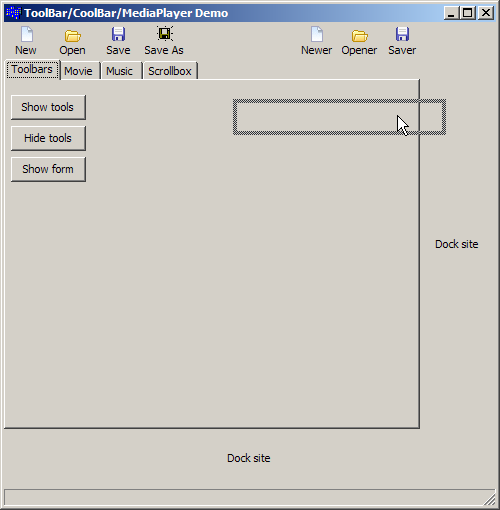
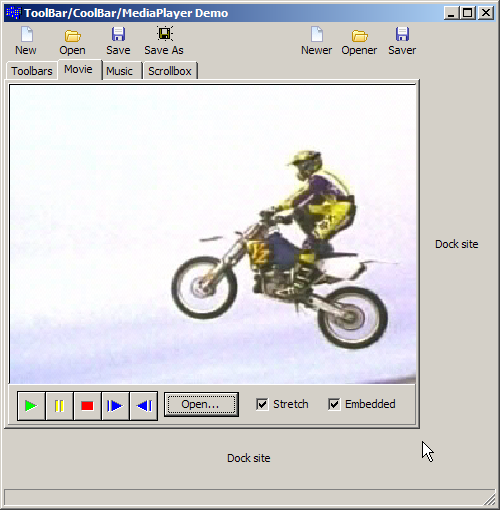
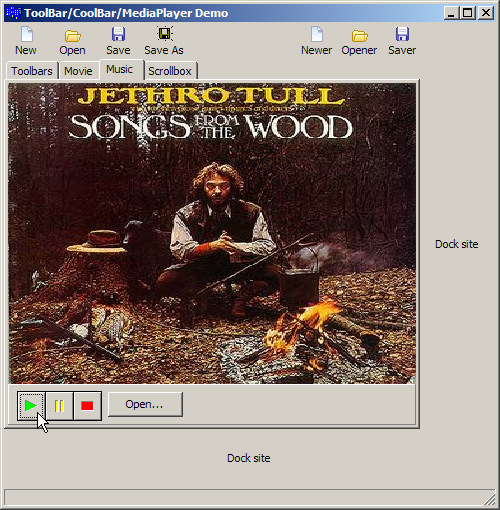
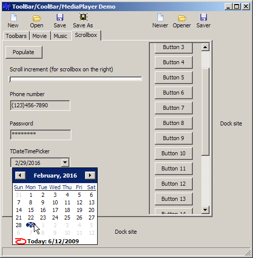

Session #11
Dockable Toolbars (There's a flash video that shows the docking in action.)I'm going to show how you can undock a toolbar and create a floating toolbar. You can dock/undock on other forms in the application. This was done using a simple TToolBar object. I also show how to put toolbars on a TCoolBar component which allowed you to rearrange the toolbars without necessarily undocking them. For more information, see Chapter 6 Working with controls in the Developer's Guide.
Then I show a simple way to play media files using the TMediaPlayer component, which is kind of a wrapper around Windows Media Player (an older version). There are much better media player components out there, but this was just a sample demonstration of how you might go about using one. For more information, see Chapter 10 Working with graphics and multimedia in the Developer's Guide.
Finally, I show a few other components that can come in handy. TMaskedEdit allows you to create an input edit control that restricts the user's input. For example, if I want the user to type in a telephone number with an area code, this would be presented to the user:
Only numbers could be typed where the underscores are. This allows for consistent and normalized input. A date mask might look like this:(_ _ _) _ _ _ - _ _ _ _
On the Scrollbox and stuff page you can see a few other components that I talked about._ _ / _ _ / _ _ _ _
Toolbar docking Video file   Audio file ScrollBox and stuff  
Note about XE 3 (and later): The Windows multimedia controls have changed since Turbo C++ and XP and are not fully compatible with Windows 7. I didn't bother to figure out how to fix it, or if it can be fixed, so I just commented out the 6 lines of code that caused problems. It compiles and runs, but you won't have any of the multimedia functionality that's present in the older version. The other components still work, although I had weird drawing issues with the toolbars in Windows 7. Some day I might re-visit this project and see if it can be updated with newer components.